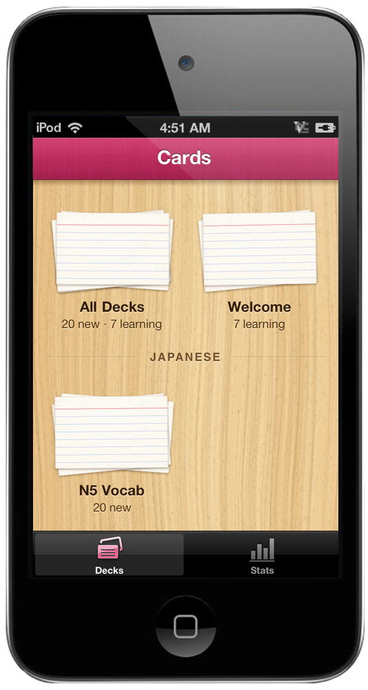
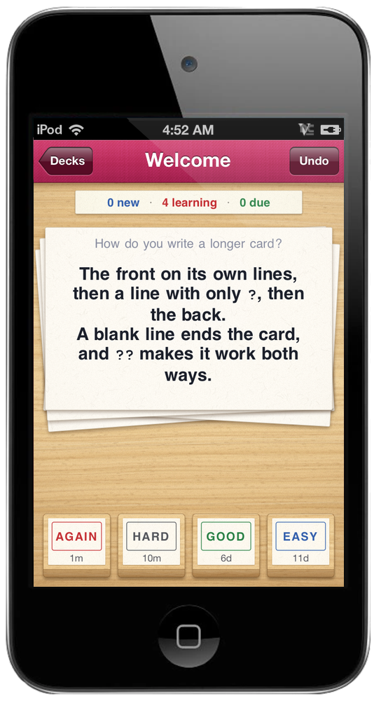
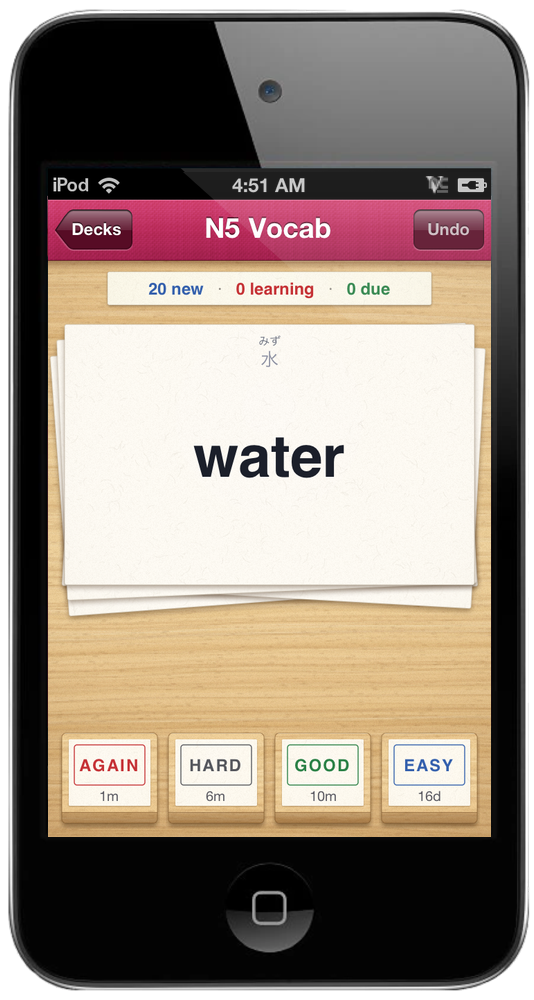
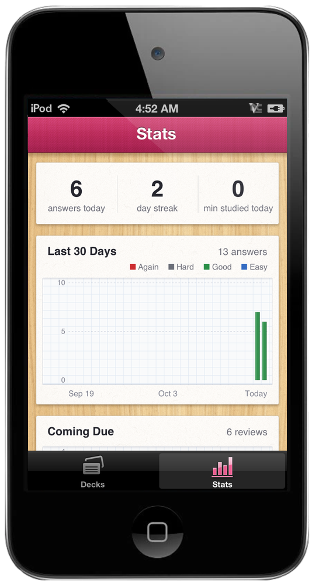
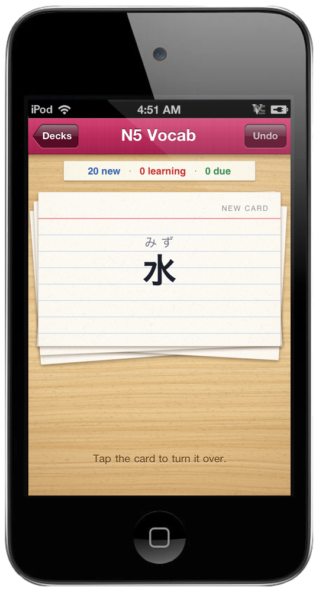

Every deck is a stack of index cards on an oak desk, and bigger decks stack taller. A red badge says how many are due. Folders on the Mac become sections on the desk, so Japanese stays with Japanese.

One Markdown file is one deck. 水[みず]::water is a card, with the reading set above the kanji. Three colons make it work both ways, and a line with just a ? splits a longer front from its back. Bold, italics, code and lists come through.

Tap the card and it flips. Answer with one of four stamps, Again, Hard, Good or Easy, each marked with when you'll see the card next. FSRS, the same scheduler built into Anki, picks that day so you remember nine cards in ten, and you can change the target in Settings.

Stats has its own tab. The last 30 days in the colors of the stamps, what comes due over the next 30, how much you remember week by week against the 90% you aimed for, and where every card stands. Below the charts, each day you studied gets a violet stamp on a date due slip.

Plug in the iPod and run cards sync. New and edited cards go over, and every answer comes back to your Mac. Reinstall the app and your history comes back too. cards check shows every deck it found, and warns about two cards with the same front.
cards script in the repo: Python 3, nothing to install. Your cards stay on your Mac and your iPod. Source on GitHub.